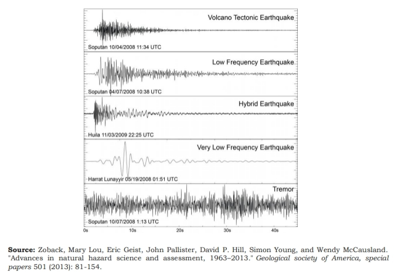
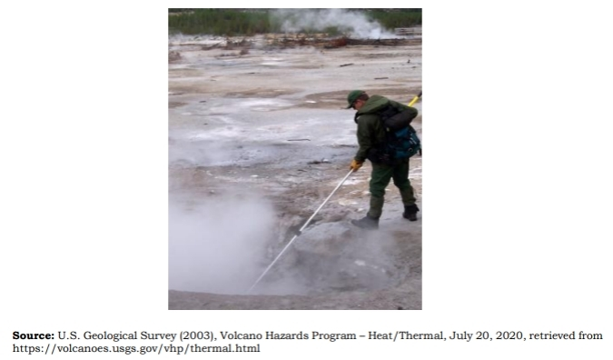
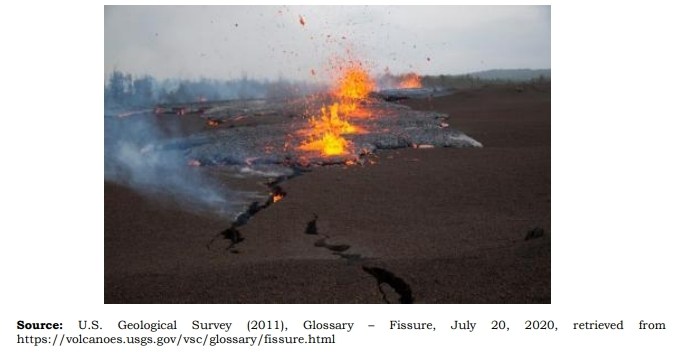
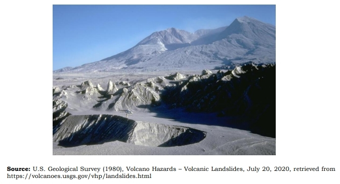
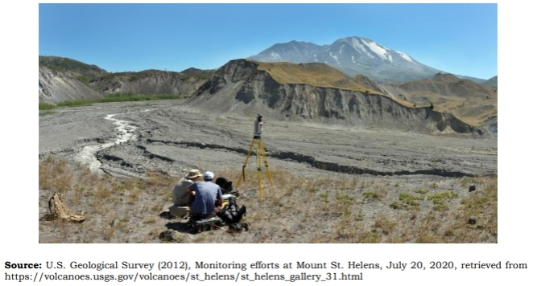
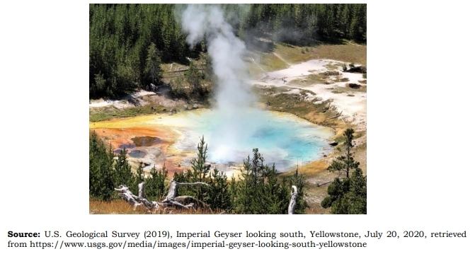
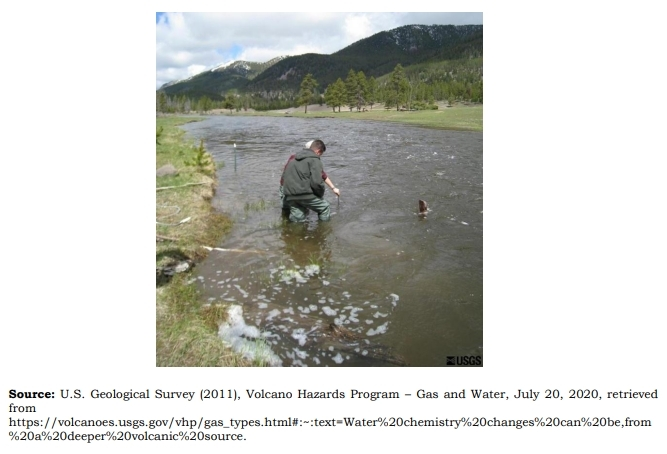
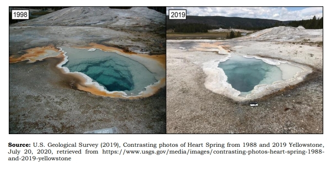
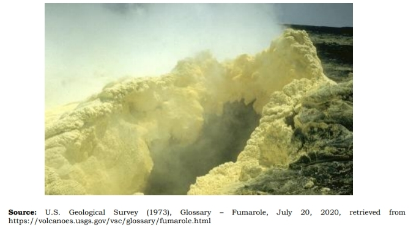

Volcano-Related Hazards
Preparing for a volcanic eruption requires specific considerations due to the unique hazards associated with it, such as ash fall, pyroclastic flow, ballistic projectiles, etc. It is also imporpant to know the signs of impending volcanic eruptions, as well as the paramaters used for monitoring volcanoes.
Volcano Hazards
Here are the hazards volcanic eruptions poses.
Lahar
Lahar a Javanese term (Java is an island in Indonesia) that describes a hot or cold mixture of water and rock fragments that flows down the slopes of a volcano and typically enters a river valley.
Ash Fall
Volcanic ash, tiny rock and glass particles, poses health, aviation, electronics, and power generation hazards. It can be carried by wind thousands of miles, affecting more people.
Pyroclastic Flow
Pyroclastic flow are high-density mixtures of hot lava blocks, pumice, ashes, and volcanic gases, moving rapidly down volcanic slopes, typically following valleys.
Ballistic Projectiles
Rocks that an erupting volcano may hurl into the air. These blocks and bombs travel like cannonballs and usually land within 2km of the vent (but can travel as far as 5km, or even further, if the eruption is very explosive.)
Volcanic Gases
Magma, containing dissolved gases, is the driving force behind volcanic eruptions, as it rises and pressure decreases, gases are released from the magma's liquid portion.
Lava Flow
Lava flow refers to molten rock erupting from a vent, varying in speed depending on factors like type, viscosity, ground steepness, flow form (sheet, channel, tube), and lava production rate at the vent.
Now that we know the hazards volcanic eruption poses, let us know the signs of an impending volcanic eruptions.
Signs Of An Impending Eruption
Increase in the frequency of volcanic quakes with rumbling sounds; occurrence of volcanic tremors
Increased steaming activity; change in color of steam from white to gray due to entrained ash.
Crater glow due to presence of magma at or near the crater.

Ground swells (or inflation), ground tilt and ground fissure due to magma intrusion.
Localized landslides, rock falls and landslides from the summit area that are not attributed to heavy rains.
Noticeable increase in drying up of vegetation around the volcano's upper slopes.
Increase in temperature of hot springs, wells (e.g. Bulusan and Canlaon) and crater lake (e.g. Taal) near the volcano.
Noticeable variation in the chemical content of springs, crater lakes within the vicinity of the volcano.
Drying up of springs/wells around the volcano.
Development of new thermal areas and/or reactivation of old ones; appearance of solfataras (craters with sulfur gas).
The Parameter Used To Monitor Volcanic Activity
Here are the parameters used for monitoring volcanic activity:
Ground deformation on volcanoes, such as sinking, tilting, and bulging, is often detected using tiltmeters and satellite imaging, but interpretation requires field verification.
Seismic activity occurs when magma rises, breaking rock, generating earthquakes. Seismometers monitor quakes/tremors by determining seismic wave patterns before eruptions.
Gases – monitor types and rate of emission of different gases; Concentrations of gases are sometimes high enough to create acid rain that kills vegetation around the volcano; collection of samples from vents directly with the use of remote sensing instruments that identify and quantify the present gases.
Sensory observations (by people living near volcano):
- Visual
intensified presence of steam; drying up of vegetation, wells/spring/lake; crater glow at the mouth of the volcano.
- Auditory
rumbling sounds are heard.
- Olfactory
observed foul smell (usually rotten egg caused by sulfur) caused by presence of volcanic gases.
- Tactile
ground movement/earthquake is felt.